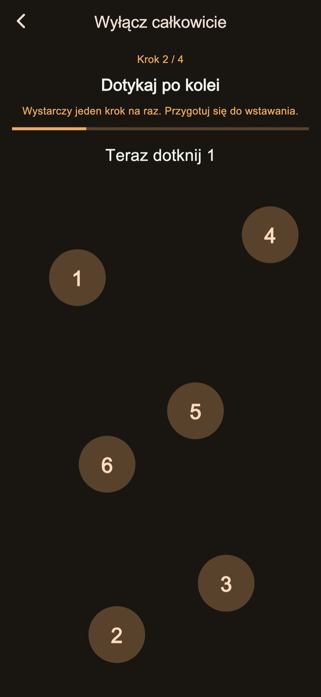
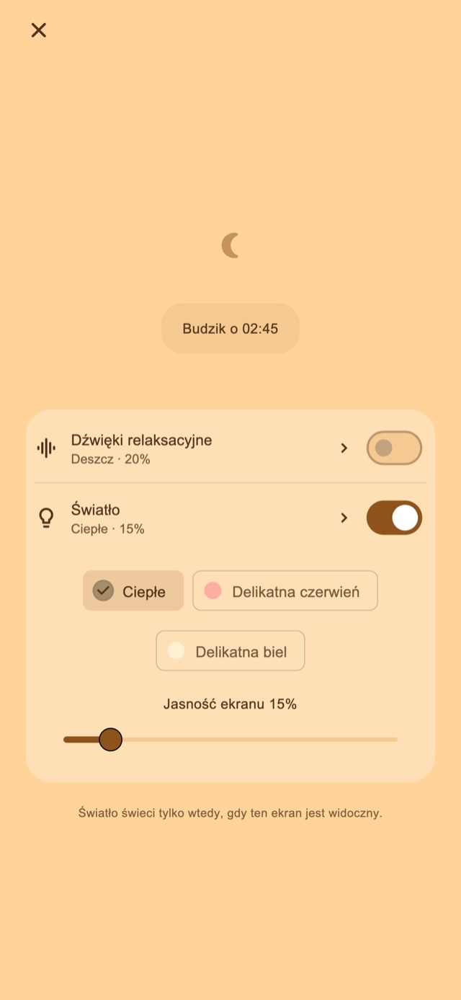

Dźwięki relaksacyjne
Słuchaj deszczu, fal lub białego szumu. Dźwięk zaczyna się tylko po włączeniu i stopniowo cichnie przed pierwszym alarmem.
Budzik wibracyjny na drzemki i po usypianiu dziecka
Dla tych, którzy przedłużają drzemkę lub zasypiają podczas usypiania dziecka.
01Wzory wibracji
Zmienna długość i rytm odróżniają wibracje od codziennych powiadomień. To nietypowe odczucie ma pomóc zauważyć alarm i się obudzić.
Krótkie i długie impulsy oraz szybkie serie. Wybierz jeden z czterech trybów: losowy, jak powiadomienia, głównie długie lub głównie krótkie. Czas trwania i odstępy zmieniają rytm. Wypróbuj go przed ustawieniem alarmu.
Wzory wibracji
02Kilka alertów
Zatrzymaj tylko bieżący alert, aby zachować następne, lub zakończ serię i anuluj pozostałe.
Zapisywanie liczby alarmów i odstępu to funkcja Premium.
Kilka alertów
Zakończ po wstaniu
03Zadania zatrzymania
Obliczenia, dotykanie liczb po kolei, przytrzymanie i wielokrotne dotknięcia towarzyszą zatrzymaniu i odroczeniu. Standardowe kroki są dostępne. Ich edycja i łączenie wymaga Premium.

Ekran nocny
Dostosuj jasność i wygląd zegara. Możesz ukryć obraz po chwili bezczynności i dotknąć ekranu, aby ponownie pokazać godzinę i przyciski.
Wybierz czas, np. 30 minut, lub godzinę pobudki.
Pozostaw otwarty nocny ekran; włącz dźwięk lub światło, jeśli chcesz.
Wykonaj kroki zatrzymania i zakończ serię, gdy wstaniesz.
Relaksujące dźwięki i światło
Na drzemkę lub usypianie dziecka. Włączaj je na nocnym ekranie, kiedy potrzebujesz.
Słuchaj deszczu, fal lub białego szumu. Dźwięk zaczyna się tylko po włączeniu i stopniowo cichnie przed pierwszym alarmem.
Wybierz ciepłe, jasnoczerwone lub delikatne białe światło i ustaw jasność.
Podstawy bez opłat

Bezpłatnie / Premium
Cztery tryby wibracji, standardowe zatrzymanie i odroczenie, nocny ekran, dźwięki i światło są dostępne. Niektóre ekrany pokazują reklamy.
| Funkcja | Bezpłatnie | Premium |
|---|---|---|
| Wzory wibracji | ✓ | ✓ |
| Kilka alertów | Ustawienia standardowe | Można dostosować |
| Zadania zatrzymania | Ustawienia standardowe | Można dostosować |
| Ekran nocny / Dźwięki relaksacyjne / Światło | ✓ | ✓ |
| Twórz i edytuj własne wibracje. | — | ✓ |
| Usuń wszystkie reklamy. | — | ✓ |
Wybierz plan miesięczny lub zakup jednorazowy. Plan miesięczny odnawia się automatycznie; zarządzaj nim lub anuluj go w ustawieniach konta sklepu. Ceny i warunki znajdziesz przed zakupem.
Pytania i odpowiedzi
Aby używać własnych wibracji aplikacji, po ustawieniu alarmu pozostaw otwarty nocny ekran. Zablokowanie bocznym przyciskiem lub przejście do innej aplikacji przekazuje sterowanie wibracjami do iOS; wybrany rytm i siła nie są wtedy stosowane. Sprawdź uprawnienia i ustawienia wibracji oraz wykonaj próbę działania.
Słuchaj deszczu, fal lub białego szumu. Dźwięk zaczyna się tylko po włączeniu i stopniowo cichnie przed pierwszym alarmem. Wybierz ciepłe, jasnoczerwone lub delikatne białe światło i ustaw jasność.
Cztery tryby wibracji, standardowe zatrzymanie i odroczenie, nocny ekran, dźwięki i światło są dostępne. Niektóre ekrany pokazują reklamy. Usuń wszystkie reklamy. Zmień liczbę alertów i odstępy. Edytuj kroki zatrzymania i odroczenia. Twórz i edytuj własne wibracje. Wybierz plan miesięczny lub zakup jednorazowy. Plan miesięczny odnawia się automatycznie; zarządzaj nim lub anuluj go w ustawieniach konta sklepu. Ceny i warunki znajdziesz przed zakupem.
Pobierz
Budzik wibracyjny na drzemki i po usypianiu dziecka
Podstawy bez opłat
iPhone: iOS 26.1+ / Android: 8.0+